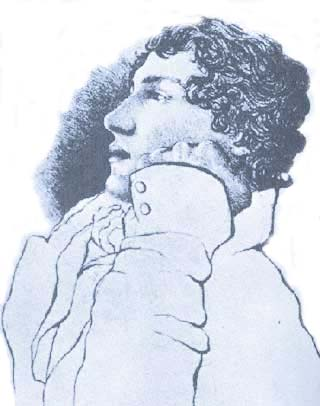
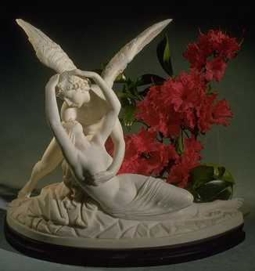

|

Texto de
Susana
Lopes de Alexandria
Livro
revela relao de Troi e Riker

|
No episdio "Conundrum",
Riker e Troi descobrem que tm algum envolvimento emocional aps
lerem a dedicatria que a conselheira havia escrito num livro
dado ao comandante. Trata-se de um livro do poeta ingls John
Keats (1795-1821), autor citado mais de uma vez em Jornada
nas Estrelas.
Poeta morreu aos 25 anos Keats foi um dos ltimos grandes poetas do Romantismo ingls, que durou aproximadamente entre 1792 e 1822. Havia muitos outros poetas vivendo na mesma poca que ele, vrios deles mais famosos, como William Wordsworth e Samuel Coleridge. Estes eram considerados os "patriarcas" da poesia romntica inglesa, que comearam a escrever logo aps a Revoluo Francesa. Depois surgiu um grupo de poetas mais jovens e rebeldes, como Lord Byron e Percy Bysse Shelley (marido de Mary Shelley, autora de Frankenstein). O quinto poeta a ser reconhecido pela crtica (infelizmente, postumamente) foi John Keats. Seu azar foi no se encaixar no grupo dos mais velhos, por causa de sua pouca idade, nem do grupo dos mais jovens, pois no era lorde nem pertencia alta classe. Ele foi o primeiro poeta "classe mdia" a receber ateno do pblico. A promissora carreira do jovem poeta, porm, foi prematuramente encerrada com sua morte por tuberculose, aos 25 anos de idade.  John Keats A obra John Keats publicou seus primeiros sonetos em 1816 e seu primeiro livro, Poemas, em 1817. As Vsperas de Santa Ins e Outros Poemas (1819) considerado seu melhor livro e contm a obra-prima lrica Ode ao Outono e trs outras odes consideradas entre as melhores da lngua inglesa: Ode a uma Urna Grega, Ode Melancolia e Ode a um Rouxinol. Uma ode (do grego od, "canto") um poema para ser cantado acompanhado de um instrumento musical. Em tom elevado, as odes esto destinadas a exaltar a vida de um indivduo, comemorar um feito ou descrever a natureza. Depois de sua morte, foram publicados alguns de seus melhores poemas, entre os quais esto As vsperas de So Marcos (1848) e La Belle Dame Sans Merci (1888). Suas cartas, consideradas entre as melhores cartas literrias escritas em ingls, foram publicadas em sua edio mais completa em 1931.Keats e Jornada nas Estrelas Alm dessa referncia do episdio "Conundrum", Keats j apareceu indiretamente em pelo menos dois episdios da Srie Clssica. O ttulo "Is There in Truth no Beauty?" (No H Beleza na Verdade?) foi inspirado num verso do poema Ode a Uma Urna Grega (Ode to a Grecian Urn). O ttulo "Who Mourns for Adonais?" (Um Lamento por Adnis) um verso tirado do poema Adonais, escrito pelo poeta ingls Percy Shelley em homenagem ao amigo John Keats, que, segundo Shelley, havia morrido de desgosto por causa de algumas crticas virulentas sua poesia. No episdio "Conundrum", o nome do livro que Deanna Troi deu a William Riker Ode Psiqu, ttulo da primeira ode escrita por Keats, em abril de 1819. Psiqu uma uma figura da mitologia grega. Segundo o mito, Eros (deus do Amor) apaixona-se pela bela mortal Psiqu e pede a Zeus que a torne imortal. Psiqu empresta seu nome ao esprito humano, alma humana.  Amor e Psiqu, clebre escultura de Antonio Canova (1787-1793), conservada no Museu do Louvre, em Paris. Ao celebrar Psiqu em sua ode, Keats na verdade define e celebra as qualidades da alma humana (representadas por Psiqu) que ele deseja ardentemente ver preservadas. Nos trechos finais da ode, ele promete deusa Psiqu ser o portador dessas qualidades, a fim de tornar-se merecedor do amor (abaixo, no original e numa traduo livre). Yes, I will be thy
priest, and build a fane And there shall be
for thee all soft delight =================== Sim, serei teu
sacerdote, e farei um templo E haver para ti
todos os suaves deleites |